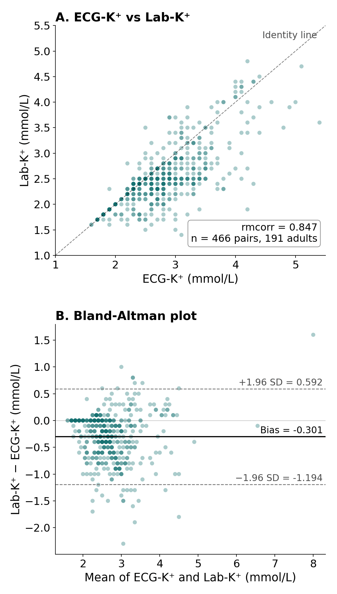

In adults, the model is accurate
An AI-ECG model (ECG12Net) estimates serum potassium from a standard 12-lead ECG. Our collaborators at Tri-Service General Hospital and the National Defense Medical University, Taiwan, developed it from 66,321 emergency-department ECGs (Lin CS et al. JMIR Med Inform 2020 (opens in a new tab)).
In adults, it is accurate across settings, even at the extremes. Since 2020, the team has published at least seven original papers on this model.
In a test set of 13,222 ECGs, it flagged 95.6% of severe low potassium (≤2.5 mmol/L) as low, and 84.5% of severe high potassium (≥6.5 mmol/L) as high (Lin CS et al. JMIR Med Inform 2020 (opens in a new tab)).
During treatment, the ECG follows potassium
Our study showed that, during treatment of severe hypokalemia, the ECG follows the potassium trend in real time. The estimate is ready as soon as the ECG is recorded.
In 191 adults with severe hypokalemia, the ECG estimate tracked laboratory potassium within each patient (repeated-measures correlation 0.847; AUC 0.920). It was available a mean of 52.5 minutes before the laboratory report (Ding JJ et al. Am J Kidney Dis 2026 (opens in a new tab)).

Why several centres
To our knowledge, no deep-learning potassium model has been validated in children. The pediatric ECG differs from the adult ECG. Each centre sees few hypokalemic children, and severe values are rarer still. Pooling across centres is therefore necessary.
We start from the adult model
- Step 1A (retrospective): apply the adult model, unchanged, to existing pediatric ECGs. Children aged 28 days to 17 years; records from 2019 to 2025; a digital 12-lead ECG with a laboratory serum or plasma potassium within 60 minutes. Main outcome: accuracy for potassium <3.5 mmol/L, by age band (<1, 1–11, 12–17 years) and by cause (acute shift or chronic deficit).
- Step 1B (only if needed): transfer learning. We fine-tune the adult model with the pooled pediatric data, and test it on a site that it has not seen. Our hypothesis is that this needs fewer pediatric cases than a new model.
- Step 2 (later, under a separate protocol): prospective monitoring during potassium correction.
The goal
Earlier detection of abnormal potassium, and a painless way to follow the potassium trend. When the trend turns, a blood test confirms it, and the team treats. The ECG does not replace the blood test. Step 2 tests this goal in children.
What a site does in Step 1
- Obtains local ethics approval.
- Removes names, ID numbers and all dates before any data leave the hospital.
- Sends the de-identified data by secure transfer.
The analysis runs centrally in Taiwan. Nothing needs to be installed at your hospital. Each site receives the results for its own ECGs.
Target
At least 150 hypokalemic and 450 normokalemic ECGs in total, pooled across all sites. There is no quota for any single site.
To be agreed with participating sites
The data transfer agreement, authorship rules (ICMJE criteria), the pre-specified success criteria, and the timeline.
Email: jamesdin1124@gmail.com
We will contact interested teams to finalize the protocol together.
Publications
- Ding JJ et al. Am J Kidney Dis 2026. The adult study. Article (opens in a new tab) · PubMed (opens in a new tab)
- Zhou X, Neyra JA. Am J Kidney Dis 2026. Editorial on the adult study. Article (opens in a new tab) · PubMed (opens in a new tab)
- Lin CS et al. JMIR Med Inform 2020. Development of ECG12Net. Open access. Article (opens in a new tab) · PubMed (opens in a new tab)
Contact
Jhao-Jhuang Ding, MD — Division of Pediatric Nephrology, Chang Gung Memorial Hospital, Linkou, Taiwan — jamesdin1124@gmail.com